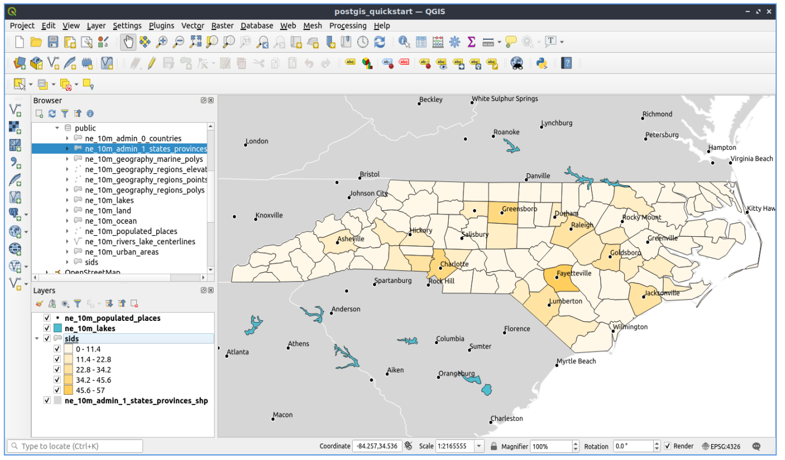

Inicio Rápido de PostGIS¶
PostGIS añade capacidades espaciales a la base de datos relacional de PostgreSQL. Se extiende PostgreSQL almacena, consulta, y manipular datos espaciales. En este inicio rápido usamos “PostgreSQL” al describir las funciones de base de datos general y “PostGIS” al describir la funcionalidad espacial adicional proporcionada por PostGIS.
Esta Guía de Inicio Rápido describe cómo:
- Crear y consultar una base de datos espacial desde la línea de comando y QGIS graphical client.
- Administrar datos desde el cliente
pgAdmin.
Contents
- Arquitectura cliente-servidor
- Creación de una base de datos habilitada espacialmente
- Creación de una Tabla Espacial mediante SQL
- Consultas simples
- Consultas espaciales
- Mapeo
- Importación de datos espaciales a la base de datos
- Conocer pgAdmin
- Ejecución de una consulta SQL de pgAdmin
- Conozca los Contenedores de Datos Externos (FDW)
- Conéctese a una fuente de datos OGR remota a través de ogr_fdw
- Cosas para probar
- ¿Qué sigue?
Arquitectura cliente-servidor¶
Como muchas bases de datos, PostgreSQL, funciona como un servidor en un sistema cliente-servidor. El cliente hace una petición al servidor y regresa una respuesta. Se trata de la misma manera que los trabajos de internet - el navegador es un cliente y un servidor web envía la página web. Con PostgreSQL las solicitudes son en el lenguaje SQL y la respuesta es generalmente una tabla de datos de la base de datos.
No hay nada para detener el servidor en el mismo equipo que el cliente, y esto le permite utilizar PostgreSQL en una sola máquina. El cliente se conecta al servidor mediante la conexión de red interna “loopback” y no es visible a otros equipos a menos que usted configurarlo para serlo.
Creación de una base de datos habilitada espacialmente¶
Los clientes de línea de comandos se ejecutan desde una ventana de Emulador de Terminal.
Inicie un Emulador de Terminal (LXTerminal actualmente) desde el menú Aplicaciones de la sección Accesorios. Esto le da un símbolo del sistema del shell de Unix. Tipo:
psql -V
y pulsar Enter para ver el número de versión de PostgreSQL.
Un solo servidor PostgreSQL le permite organizar el trabajo al organizarlo en bases de datos separadas. Cada base de datos es un régimen independiente, con sus propias tablas, vistas, usuarios, etc. Cuando se conecta a un servidor PostgreSQL, debe especificar una base de datos.
Usted puede obtener una lista de bases de datos en el servidor con el:
psql -l
comando. Usted debe ver varias bases de datos utilizadas por algunos de los proyectos en el sistema. Vamos a crear una nueva para este inicio rápido.
Truco
La lista utiliza un localizador estándar de unix - pulsa space para página siguiente, b para volver, q para cerrar, h para obtener ayuda.
PostgreSQL nos ofrece un programa de utilidad para la creación de bases de datos,``createdb``. Necesitamos crear una base de datos antes de agregar las extensiones de PostGIS. Llamaremos a nuestra base de datos demo. El comando es entonces:
createdb demo
Truco
Generalmente puede obtener ayuda para las herramientas de línea de comandos mediante la opción``–help`` .
Si ahora ejecuta psql -l debería ver su base de datos demo en la lista. No hemos añadido la extensión PostGIS todavía, pero en la siguiente sección te explicamos cómo.
Puede crear bases de datos PostGIS usando el lenguaje SQL. Primero elimine la base de datos que acabamos de crear utilizando el comando dropdb, luego use el comando psql para conseguir un intérprete de comandos SQL:
dropdb demo
psql -d postgres
Esto conecta a la base de datos de sistema de núcleo llamado postgres. Ahora introduzca el código SQL para crear una nueva base de datos:
postgres=# CREATE DATABASE demo;
Ahora cambie la conexión de la base de datos de postgres a la nueva base de datos de demo. En el futuro usted puede conectarse a él directamente con psql -d demo, pero aquí hay una forma clara de cambiar dentro de la línea de comando de `` psql``:
postgres=# \c demo
Truco
Presione CTRL + C si el indicador psql sigue apareciendo después de presionar regresar. Limpiará su entrada y comenzará de nuevo. Probablemente esté esperando una comilla de cierre, punto y coma o algo así.
Debería ver un mensaje informativo, y el aviso cambiará para mostrar que ahora está conectado a la base de datos `` demo``.
A continuación, agregar extensión de PostGIS:
demo=# create extension postgis;
Para verificar que tienes ahora instalado postgis, ejecute la siguiente consulta:
demo=# SELECT postgis_version();
postgis_version
---------------------------------------
2.3 USE_GEOS=1 USE_PROJ=1 USE_STATS=1
(1 row)
PostGIS instala muchas funciones, una tabla y varias vistas
Teclee \dt para enlistar las tablas en la base de datos. Debería ver algo como esto:
demo=# \dt
List of relations
Schema | Name | Type | Owner
--------+------------------+-------+-------
public | spatial_ref_sys | table | user
(1 row)
La tabla spatial_ref_sys es utilizada por PostGIS para convertir entre sistemas de referencia espaciales diferentes. La tabla spatial_ref_sys almacena la información en los sistemas de referencia espacial válida, y podemos usar algunos SQL para tener un rápido vistazo:
demo=# SELECT srid, auth_name, proj4text FROM spatial_ref_sys LIMIT 10;
srid | auth_name | proj4text
------+-----------+--------------------------------------
3819 | EPSG | +proj=longlat +ellps=bessel +towgs...
3821 | EPSG | +proj=longlat +ellps=aust_SA +no_d...
3824 | EPSG | +proj=longlat +ellps=GRS80 +towgs8...
3889 | EPSG | +proj=longlat +ellps=GRS80 +towgs8...
3906 | EPSG | +proj=longlat +ellps=bessel +no_de...
4001 | EPSG | +proj=longlat +ellps=airy +no_defs...
4002 | EPSG | +proj=longlat +a=6377340.189 +b=63...
4003 | EPSG | +proj=longlat +ellps=aust_SA +no_d...
4004 | EPSG | +proj=longlat +ellps=bessel +no_de...
4005 | EPSG | +proj=longlat +a=6377492.018 +b=63...
(10 rows)
Esto confirma que tenemos una base de datos habilitada espacialmente.
Además de esta tabla, encontrarás varias vistas cuando activas postgis en su base de datos.
Teclee \dv para enlistar las vistas de la base de datos. Debería ver algo como esto:
demo=# \dv
List of relations
Schema | Name | Type | Owner
--------+-------------------+------+----------
public | geography_columns | view | postgres
public | geometry_columns | view | postgres
public | raster_columns | view | postgres
public | raster_overviews | view | postgres
(4 rows)
PostGIS soporta varios tipos de datos espaciales:
geometry - es un tipo de datos que almacena datos como vectores dibujados sobre una superficie plana
geography - es un tipo de datos que almacena datos como vectores dibujados sobre una superficie esferoidal
- raster - es un tipo de datos que almacena los datos como una matriz n-dimensional que representa cada posición (píxel)
- un área de espacio y cada banda (dimensión) tiene un valor para cada espacio de píxeles.
Las vistas geometry_columns, geography_columns y raster_columns tienen el trabajo de decirle a PostGIS qué tablas tienen geometría PostGIS, geografía y columnas de ráster.
Descripciones son mesas de resolución más baja para datos ráster. Las raster_overviews enlistan dichas tablas y sus columnas de ráster y la tabla para la que es una vista general. Las tablas de vistas generales de ráster se utilizan herramientas como QGIS para proporcionar versiones baja resolución de datos ráster para cargar más rápido.
El tipo de geometría PostGIS es el primero y aún más popular utilizado por los usuarios de PostGIS. Enfocaremos nuestra atención en ese tipo.
Creación de una Tabla Espacial mediante SQL¶
Ahora tenemos una base de datos espacial podemos hacer algunas tablas espaciales.
Primero creamos una tabla de base de datos común para almacenar algunos datos de la ciudad. Esta tabla tiene tres campos - uno para un ID numérico de identificación de la ciudad, una para el nombre de la ciudad y otra para la columna de geometría:
demo=# CREATE TABLE cities ( id int4 primary key, name varchar(50), geom geometry(POINT,4326) );
Convencionalmente esta columna de geometría se denomina geom (la más vieja convención de PostGIS era the_geom). Esto le indica a PostGIS qué tipo de geometría, tiene cada función (puntos, líneas, polígonos, etcetera), cuántas dimensiones (en este caso 2, si tuviese 3 o 4 dimensiones utilizaríamos POINTZ, POINTM o POINTZM), y el sistema de referencia espacial. Utilizamos EPSG:4326 coordenadas para nuestras ciudades.
Ahora si revisas la tabla ciudades usted debería ver la nueva columna y se informó que la tabla no contiene actualmente ninguna fila.
demo=# SELECT * from cities;
id | name | geom
----+------+----------
(0 rows)
Para agregar filas a la tabla que utilizamos algunas sentencias SQL. Para obtener la geometría en la columna de geometría usamos la función PostGIS ST_GeomFromText para convertir de un formato de texto que le da las coordenadas y un id de sistema de referencia espacial:
demo=# INSERT INTO cities (id, geom, name) VALUES (1,ST_GeomFromText('POINT(-0.1257 51.508)',4326),'London, England');
demo=# INSERT INTO cities (id, geom, name) VALUES (2,ST_GeomFromText('POINT(-81.233 42.983)',4326),'London, Ontario');
demo=# INSERT INTO cities (id, geom, name) VALUES (3,ST_GeomFromText('POINT(27.91162491 -33.01529)',4326),'East London,SA');
Truco
Utilice las teclas de flecha para recordar y editar líneas de comando.
Como se puede ver que muy rápidamente esto es cada vez más tedioso. Por suerte hay otras formas de obtener datos en las tablas PostGIS que son mucho más fáciles. Pero ahora tenemos tres ciudades en nuestra base de datos, y podemos trabajar con eso.
Consultas simples¶
Todas las operaciones SQL habituales se pueden aplicar para seleccionar datos de una tabla PostGIS:
demo=# SELECT * FROM cities;
id | name | geom
----+-----------------+----------------------------------------------------
1 | London, England | 0101000020E6100000BBB88D06F016C0BF1B2FDD2406C14940
2 | London, Ontario | 0101000020E6100000F4FDD478E94E54C0E7FBA9F1D27D4540
3 | East London,SA | 0101000020E610000040AB064060E93B4059FAD005F58140C0
(3 rows)
Esto nos da una versión hexadecimal codificada de la coordianates, no muy útiles para los seres humanos.
Si quieres echar un vistazo a la geometría en formato WKT otra vez, puede utilizar las funciones ST_AsText(geom) o ST_AsEwkt(geom). También se puede utilizar ST_X(geom), ST_Y(geom) para obtener el valor numérico de las coordenadas:
demo=# SELECT id, ST_AsText(geom), ST_AsEwkt(geom), ST_X(geom), ST_Y(geom) FROM cities;
id | st_astext | st_asewkt | st_x | st_y
----+------------------------------+----------------------------------------+-------------+-----------
1 | POINT(-0.1257 51.508) | SRID=4326;POINT(-0.1257 51.508) | -0.1257 | 51.508
2 | POINT(-81.233 42.983) | SRID=4326;POINT(-81.233 42.983) | -81.233 | 42.983
3 | POINT(27.91162491 -33.01529) | SRID=4326;POINT(27.91162491 -33.01529) | 27.91162491 | -33.01529
(3 rows)
Consultas espaciales¶
PostGIS añade muchas funciones con funcionalidad espacial a PostgreSQL. Ya hemos visto ST_GeomFromText que convierte WKT a la geometría. La mayoría de ellos comienza con ST (de tipo espacial) y se enumeran en una sección de la documentación de PostGIS. Ahora usaremos uno para responder a una pregunta práctica - hasta qué punto son estos tres Londres, en metros, suponiendo que una tierra esférica?
demo=# SELECT p1.name,p2.name,ST_DistanceSphere(p1.geom,p2.geom) FROM cities AS p1, cities AS p2 WHERE p1.id > p2.id;
name | name | st_distancesphere
-----------------+-----------------+--------------------
London, Ontario | London, England | 5875766.85191657
East London,SA | London, England | 9789646.96784908
East London,SA | London, Ontario | 13892160.9525778
(3 rows)
Esto nos da la distancia, en metros, entre cada par de ciudades. Observe cómo la parte de “Dónde” en la línea detiene nosotros devolviendo distancias de una ciudad hacia sí mismo (que serán todas cero) o las distancias inversas a las de la tabla anterior (Londres, Inglaterra a Londres, Ontario es la misma distancia que Londres, Ontario a Londres, Inglaterra). Pruébalo sin la parte de “Dónde” y ver qué pasa.
También podemos calcular la distancia usando un esferoide usando una diversa función y especificando el nombre de esferoide, eje semi mayor y parámetros aplanar inversos:
demo=# SELECT p1.name,p2.name,ST_DistanceSpheroid(
p1.geom,p2.geom, 'SPHEROID["GRS_1980",6378137,298.257222]'
)
FROM cities AS p1, cities AS p2 WHERE p1.id > p2.id;
name | name | st_distancespheroid
-----------------+-----------------+----------------------
London, Ontario | London, England | 5892413.63776489
East London,SA | London, England | 9756842.65711931
East London,SA | London, Ontario | 13884149.4140698
(3 rows)
Para salir de la línea de comandos de PostgreSQL, introduzca:
\q
Usted está ahora a la consola del sistema:
user@osgeolive:~$
Mapeo¶
Para producir un mapa de datos de PostGIS, necesita a un cliente que puede obtener los datos. La mayoría de los programas de código abierto GIS pueden hacerlo - gvSIG, QGIS, uDig por ejemplo. Ahora te mostramos cómo hacer un mapa de QGIS.
Iniciar QGIS desde el menú de escritorio SIG y elija Add PostGIS layers en el menú de capa. Los parámetros para la conexión a los datos de Natural Earth en PostGIS ya están definidos en el menú desplegable de Conexiones. Puede definir nuevas conexiones con servidores aquí y almacenar los ajustes para una fácil recuperación. Haga click en el menú desplegable de conexiones y escoja la Natural Earth. Presione editar si usted quiere ver lo que esos parámetros son para Natural Earth, o sólo presione Connect para continuar:

Ahora obtendrá una lista de las tablas espaciales en la base de datos:

Elegir la tabla ne_10m_lakes y presione Add en la parte inferior (no Load en la parte superior - que carga los parámetros de conexión de base de datos), y se debe cargar en QGIS:

Ahora debería ver un mapa de los lagos. QGIS no sabe que son los lagos, así que no podría azul les color para usted - utilizar la documentación de QGIS para trabajar la manera de cambiar esto. Haga un acercamiento sobre un famoso grupo de lagos en Canadá.
Importación de datos espaciales a la base de datos¶
La mayoría de las herramientas de escritorio de OSGeo tienen funciones para importar datos espaciales de otros formatos (por ejemplo, ESRI Shape) a la base de datos. Una vez más usaremos QGIS para mostrar esto.
Importar shapefiles a QGIS puede hacerse mediante el práctico Administrador de Base de Datos de QGIS. Encuentre el manejador en el menú. Vaya a Database -> DB Manager -> DB Manager.
Despliega el ítem de Postgis, luego el ítem de NaturalEarth. Luego se conectará a la base de datos de Natural Earth. Dejar la contraseña en blanco si le pide. En el ítem público, hay la lista de las capas de la base de datos. Verás la ventana principal del administrador. A la izquierda puede seleccionar tablas de la base de datos y usar las pestañas de la derecha para conocerlas. La pestaña Vista previa le mostrará un pequeño mapa.

Ahora usaremos el administrador de DB para importar un archivo de formas en la base de datos. Usaremos los datos de síndrome de muerte súbita del lactante (SMSL) de Carolina del norte que se incluye en uno de los complementos de paquete de estadísticas R.
En el menú Table elija la opción Import layer/file . Pulse el botón ... y busque el shapefile sids.shp en el el directorio de R (ubicado en /home/user/data/vector/R/shapes):

Deja todo lo demás como está y presione Load
{kind=link}
Dejar que el selector de sistema de referencia de coordenadas sea el predeterminado (WGS 84 EPSG:4326) y pulse “”OK”””. El shapefile debe importarse a PostGIS sin errores. Cierre el Administrador de bases de datos y regrese a la ventana principal de QGIS.
Ahora cargue los datos de SIDS en el mapa utilizando la opción Add PostGIS Layer”. Con un poco de reorganización de las capas y algunos coloreados, usyed debe ser capaz de producir un mapa coroplético de las cuentas de síndrome de muerte súbita (campos sid74 o sid79) en Carolina del norte:
{kind=link}
Conocer pgAdmin¶
Puede utilizar el cliente de base de datos gráfica pgAdmin III del menú Bases de Datos para consultar y modificar la base de datos de forma no espacial. Este es el cliente oficial de PostgreSQL.
pgAdmin III le permite utilizar SQL para manipular las tablas de datos. Puede encontrar e iniciar pgAdmin desde la carpeta Bases de Datos, existente en OSGeoLive Desktop.

Introduzca la contraseña user
Aquí, usted tiene la opción de crear una nueva conexión a un servidor PostgreSQL, o se conecta a un servidor existente. En este caso, conectaremos el servidor localhost predefinido.
Después de la conexión establecida, puede ver la lista de las bases de datos ya existentes en el sistema.

La «X» roja en la imagen de la mayoría de las bases de datos, indica que no han sido aún conectado a cualquiera de ellos (está conectado sólo a la base de datos predeterminada postgres). En este momento eres capaz sólo de ver las bases de datos existentes en el sistema. Puede conectarse haciendo doble click en el nombre de una base de datos. Hágalo para la base de datos natural_earth2.
Usted puede ver ahora que desapareció la X roja y un «» apareció a la izquierda. Presionándolo, un árbol va a aparecer, mostrando el contenido de la base de datos.
Navegar en el subárbol esquemas, expandirla. Luego ampliar el esquema de public. Navegando y ampliando Tables puedes ver todas las tablas dentro de este esquema.

Ejecución de una consulta SQL de pgAdmin¶
pgAdmin, ofrece la capacidad de ejecutar consultas a una base de datos relacional.
Para realizar una consulta en la base de datos, se tiene que pulsar el botón Query Tool de la barra de herramientas principal (ubicado a la izquierda del símolo base de datos).
Vamos a encontrar la tasa de SIDS sobre los nacimientos del 1974 para cada ciudad. Además, vamos a ordenar el resultado, en función de la tasa calculada. Para hacer eso, necesitamos realizar la siguiente consulta (enviarla al editor de texto de la Ventana SQL):
select name, 1000*sid74/bir74 as rate from sids order by rate;
Luego, debe presionar el botón de flecha que apunta a la derecha (ejecutar consulta).

Conozca los Contenedores de Datos Externos (FDW)¶
Desde su base de datos puede acceder a objetos remotos como tablas de otras bases de datos PostgreSQL o conectarse a bases de datos remotas como Oracle, MySQL, MS SQL o CouchDB. También puede conectarse a través de ODBC, conectarse a CSV, datos geoespaciales e incluso a twitter.
Encontrará una lista de diferentes FDW en:
¡Vamos a ver cómo funciona! La forma más fácil es conectarse a una base de datos PostgreSQL diferente.
Aquí están los pasos:
Primero cargue la extensión para el Contenedor de Datos Externos que desea utilizar. Para una conexión a una base de datos PostgreSQL diferente se necesita postgres_fdw
CREATE EXTENSION postgres_fdw;
Cree un Servidor externo que le indique dónde encontrar el origen de datos que desea conectar
CREATE SERVER fdw_pg_server_osm_local
FOREIGN DATA WRAPPER postgres_fdw
OPTIONS (host '127.0.0.1', port '5432', dbname 'osm_local');
Defina el usuario que se debe utilizar cuando se conecta al servidor externo
CREATE USER MAPPING FOR user
SERVER fdw_pg_server_osm_local
OPTIONS (user 'user', password 'user');
Ahora puede crear una tabla externa.
IMPORT FOREIGN SCHEMA public
LIMIT TO (planet_osm_polygon, planet_osm_point) -- or EXCEPT
FROM SERVER fdw_pg_server_osm_local
INTO public;
Busque nuevas tablas en la base de datos y eche un vistazo a los datos de una tabla externa.
Select * from planet_osm_polygon limit 10;
Conéctese a una fuente de datos OGR remota a través de ogr_fdw¶
La extensión “”ogr_fdw”” permite la conexión de varios formatos de geodatos como KML, GeoPackage, WFS, GeoJSON, GPX, GML y más.
Leer más sobre ogr_fdw
- Repositorio: https://github.com/pramsey/pgsql-ogr-fdw
- Nuevo y mejorado: http://blog.cleverelephant.ca/2016/04/ogr-fdw-update.html
Instale la extensión ogr_fdw en su base de datos.
En el tipo de solicitud de base de datos:
CREATE EXTENSION ogr_fdw;
Inspeccione qué formatos son compatibles:
Abra una terminal y busque ogr_fdw_info:
locate ogr_fdw_info
/usr/lib/postgresql/10/bin/ogr_fdw_info -f
Los resultados podrían lucir de esta manera:
Supported Formats:
-> "OGR_GRASS" (readonly)
-> "PCIDSK" (read/write)
-> "netCDF" (read/write)
-> "JP2OpenJPEG" (readonly)
-> "PDF" (read/write)
-> "MBTiles" (read/write)
-> "EEDA" (readonly)
-> "ESRI Shapefile" (read/write)
-> "MapInfo File" (read/write)
.... many more
Crear un FDW a un WFS
Inicie Geoserver a través de
- Abrir GeoServer http://localhost:8082/geoserver/web/
- GeoServer WFS GetCapabilities http://localhost:8082/geoserver/ows?service=wfs&version=2.0.0&request=GetCapabilities
- GeoServer WFS DescribeFeatureType for topp:states http://localhost:8082/geoserver/ows?service=wfs&version=2.0.0&request=DescribeFeatureType&typename=topp:states
- GeoServer WFS GetFeature topp:states http://localhost:8082/geoserver/ows?service=wfs&version=2.0.0&request=GetFeature&typename=topp:states
Cree un servidor externo que se refiera al WFS que desea conectar
CREATE SERVER fdw_ogr_server_wfs
FOREIGN DATA WRAPPER ogr_fdw
OPTIONS ( datasource 'WFS:http://localhost:8082/geoserver/ows', format 'WFS' );
Importe todos los feature_types de WFS como tablas externas con un comando.
Después de la importación, verá varias tablas externas nuevas en el esquema.
IMPORT FOREIGN SCHEMA ogr_all
FROM SERVER fdw_ogr_server_wfs
INTO public;
Inspeccione la tabla de datos externos topp_states:
SELECT * FROM topp_states WHERE state_name = 'Minnesota';
Cosas para probar¶
Aquí están algunos retos adicionales para probar:
- Pruebe algunas otras funciones espaciales como
st_buffer(geom),st_transform(geom,25831),st_x(geom)- cuya documentación encontrará completa en http://postgis.net/documentation/ - Exportar las tablas a shapefiles con “” pgsql2shp”” en la línea de comandos.
- Pruebe
ogr2ogren la línea de comandos para importar/exportar datos a su base de datos. - Intente importar datos con
shp2pgsqlen la línea de comandos a su base de datos. - Trate de hacer el ruteo de camino utilizando pgRouting.
¿Qué sigue?¶
Esto es sólo el primer paso en el camino a la utilización de PostGIS. Hay mucha más funcionalidad que puede probar.
- PostGIS Proyecto en casa - http://postgis.net
- PostGIS Documentación - http://postgis.net/documentation/